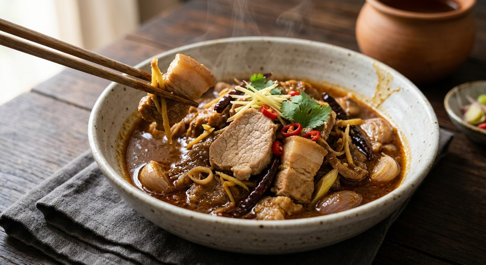

Pork belly and neck marinated in pounded ginger, garlic and dried chillies, then simmered slow with tamarind — the northern curry with no coconut milk at all.

Maejo University's local food archive tells the story plainly: แกงฮังเล is not a Thai invention. The Burmese hin le means "meat curry"; when Burmese trade and rule flowed into the Lanna north, the name softened into "hang lay" and the beef became pork, the meat every northern village had. Sour, salty, sweet in one pot — and, the sources are explicit, no coconut milk, which is exactly why it keeps longer than the southern curries.
It was a celebration dish — Maejo lists weddings, temple merit-making and house blessings, made in big pots because the simmering took hours. That long simmer is the whole technique: Pantip's home cook warns that beginners rush it, and that the flavour only settles with time. Every source agrees the curry is better the next day.
The archive's village informants keep details the recipe sites miss. Mrs Anong, from Nan, swaps ripe santol fruit for the tamarind — local wisdom Aroifin repeats as a tip. Mrs Wijit, from Mae Hong Son, cuts the pork into 2-inch cubes so the paste soaks through. And a Lemon8 cook from Bang Phli adds pickled garlic — sourness that cuts the fat of the belly.
| Thai | English | Amount |
|---|---|---|
| For the curry | ||
| เนื้อสันคอหมู | Pork neck | 300 g |
| เนื้อหมูสามชั้น | Pork belly | 200 g |
| ขิงซอย | Ginger, shredded | 1/2 cup |
| กระเทียม | Garlic | 1/2 cup |
| ถั่วลิสงคั่ว | Roasted peanuts | 2 tbsp |
| สับปะรด | Pineapple | 2 tbsp |
| ผงฮังเล | Hang lay spice powder | 2 tbsp |
| น้ำอ้อยป่น | Cane sugar | 2 tbsp |
| น้ำมะขามเปียก | Tamarind water | 3 tbsp |
| For the paste | ||
| พริกแห้ง | Dried chillies | 7 |
| พริกขี้หนูแห้ง | Dried bird's eye chillies | 4 |
| หอมแดง | Shallots | 3 |
| กระเทียม | Garlic | 20 cloves |
| ตะไคร้ซอย | Lemongrass, sliced | 2 tbsp |
| ข่าซอย | Galangal, sliced | 1 tbsp |
| เกลือ | Salt | 1 tsp |
| กะปิหยาบ | Shrimp paste | 1/2 tbsp |
The honey version (Wongnai): honey does double duty as marinade and seasoning, stock replaces water, and a spoon of curry powder goes into the paste. The family pot (Pantip): 800 g belly plus 400 g neck, whole garlic cloves, a full litre of water, dark sweet soy and fish sauce — simmered 1.5–2 hours. The Lanna kitchen notes (Maejo): fish sauce or light soy, palm sugar, 2-inch cubes, no water at the start. The shortcut (Lemon8): ready-made hang lay paste plus pickled garlic.
The sweetener. Wongnai sweetens with honey, Aroifin with cane sugar, Pantip and Maejo with palm sugar. All three schools insist on the same sour-salty-sweet balance; they only disagree about what carries the sweet.
The spice powder. Wongnai puts a tablespoon of curry powder in the paste; Aroifin uses two tablespoons of hang lay powder — the commercial spice blend sold for exactly this dish; Pantip and Maejo use neither, trusting the fresh pounded paste alone.
The marinade. An hour at Wongnai and Aroifin, at least 30 minutes at Pantip, 15–30 at Maejo. Nobody marinates for seconds — the paste must colour the pork before the pot.
The sour. Tamarind everywhere — but Maejo's Nan informant substitutes ripe santol, and the Lemon8 cook adds pickled garlic for its own sourness against the belly fat.
The pork. Belly plus neck at Wongnai, Aroifin and Pantip; belly or red meat alone at Maejo. Aroifin's tips: pick a belly that isn't too fatty, or use ribs or loin — and chicken works if pork doesn't.
The liquid. Pantip simmers in a full litre of water; Wongnai uses stock; Maejo starts with no water at all and lets the pork render into the paste, adding a little only later. Maejo is emphatic about the end state: the sauce should be thick and clinging (ขลุกขลิก), never soupy.
The extras. Pineapple goes into the marinade at Wongnai and Aroifin; roasted peanuts only at Aroifin. Pantip and Maejo keep the pot bare.
This recipe is translated from the following Thai-language sources. Where they disagree, we've said so.
1. Aroifin — "วิธีทำ แกงฮังเล อาหารเหนือล้านนา อร่อยกลมกล่อม ใครกินก็ติดใจ!" (the recipe used here, adapted from thaifoodheritage.com) — aroifin.com
2. Wongnai — "วิธีทำ แกงฮังเล เมนูอาหารเหนือรสเข้มถึงใจ ทำง่ายกว่าที่คิด!" by pimtp__ (the honey version) — wongnai.com
3. Maejo University Local Food Discovery — "แกงฮังเล: แกงหมูโบราณที่เดินทางข้ามพรมแดนสู่ครัวล้านนา" (the history and the village informants) — archives.mju.ac.th
4. Pantip — "แกงฮังเล หมูสามชั้นนุ่มเข้าเนื้อ หอมเครื่องเทศแบบล้านนา" by เจ็ดกอ (the family pot) — pantip.com
5. Lemon8 — "สูตรแกงฮังเลล้านนา หมูสามชั้นนุ่มละมุน พร้อมวิธีทำง่ายๆ" by พี่ขุน (the pickled-garlic note) — lemon8-app.com